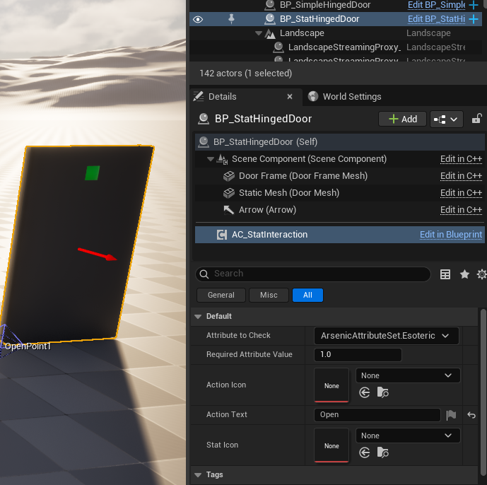

Interaction
AArsenicInteractActorBase
This is the class all interactable objects should inherit from as it has many useful functions, events, and variables that help inform designers and programmers of the current state of the object, along with handling mesh highlights. It comes with a few blueprint implementable events:
BeginHighlight();- called when the actor gets highlightedEndHighlight();- called when the actor gets unhighlightedStopLookingAt();- called when the player stops looking at the actor
Additionally, it comes with a few helpful blueprint-callable functions and variables:
SetAllowInteraction(bool bAllowInteraction, bool bUseHighlight);HighlightMesh();UnHighlightMesh();bool isInteractable;bool isHighlighted;
It is very important to note that the SceneComponent and StaticMesh are NOT initialized in the base class and must be set in child classes if they’re to be used:
Initialize these in child classes by using
CreateDefaultSubobject<UCLASS>("COMPONENT_NAME);
Highlighting Meshes
Highlighting works by using a PostProcessVolume with InfiniteExtent set to true and the material set to PP_Highlight:

The highlights currently support multiple static mesh components being highlighted together, but requires that each mesh be added to the HighlightMeshes array in the construction script:
Make sure the original static mesh is added too!
If the object only requires that 1 mesh be highlighted, no additional work is required to make the mesh highlight, as long as the mesh that comes with the actor has been initialized in the C++ constructor ( ACLASSNAME(); ) and the mesh is set in blueprint.
Simple Interact Component
This actor component (created entirely in blueprint) replaces what used to be SimpleInteractActors to allow for much more versatility at the cost of a little extra work, but fortunately all of that is handled in blueprint and is pretty straightforward.
This component comes with several functions that can be utilized by owning actors to create and remove the appropriate widget when looked at. Here’s a list of functions:
CreateSimpleWidget(FText ActionText);- creates the interact widgetRemoveWidget();- tries to remove the interact widgetSetActionText(FText ActionText);SimpleLookAt(bool AllowInteraction, FText ActionText);- Placed in owner LookAt functions to create references and automatically generate the widgetConfigureWidget(FText ActionText, FInputAction InputAction);- useful for updating the interact widget while it's still on the screen

The simplest implementation of the component on an interact actor. These function calls are required but can be manipulated to achieve what you want
This component was designed to be implemented in classes that inherit from AArsenicInteractActorBase. An excellent example of this component in use is on BP_HingedDoor:

Stat Interact Component
Shares almost all the same functions as the Simple Interact Component with some extra inputs to configure the stat interact widget, and a brand new pure function bool HasEnoughAttributeValue(FGameplayAttribute AttributeToCheck);
It has nearly identical setup as the Simple Interact Component as well:
The component can be configured on a per-instance basis by selecting it in the details panel of the interactable object:

You can find an example of this in use on BP_HingedDoor (See Simple Interact Component for file path)